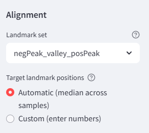
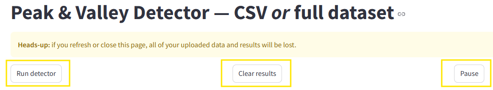

What this app does (in one breath)
It reads single-marker counts (as CSVs or from your full dataset), applies an arcsinh transform, fits KDE curves, finds peaks & valleys, scores stain quality, lets you tweak per sample, and (optionally) aligns landmarks across samples before exporting plots and CSVs.
Two workflows
- Counts CSV files — upload files named like
*_raw_counts.csv. - Whole dataset — upload
expression_matrix_combined.csvandcell_metadata_combined.csv; select markers/samples; generate counts.
Incremental engine
Files are processed one-by-one; you’ll see live plots and a progress bar. You can Pause and Resume mid-run.
Files are processed one-by-one; you’ll see live plots and a progress bar. You can Pause and Resume mid-run.
Quick Start
Path A — Counts CSV files
- In the sidebar, choose Counts CSV files.
- Upload your
_raw_counts.csvfiles and select which to use. - Set Header row (e.g.,
-1for no header) and Rows to skip if needed. - Pick detection settings (see “Controls” below), then click Run detector.
- Inspect results under Processed datasets → Plot / Parameters / Manual.
Path B — Whole dataset
- In the sidebar, choose Whole dataset.
- Upload
expression_matrix_combined.csvandcell_metadata_combined.csv. - (Optional) Filter by batch. Then select Marker(s) and Sample(s).
- Click Generate counts CSVs to cache per-sample counts. You can switch to Counts CSV files or just hit Run detector (it auto-uses the generated counts).

Expected columns
expression_matrix_combined.csv: one column per marker; often acell_idcolumn (it’s ignored).cell_metadata_combined.csv: must includesample;batchis optional but useful.
Controls and when to adjust them
The table shows what each control does and how to tune it for typical data patterns.
| Control | Screenshot | What it does | When to increase / decrease | Practical tips |
|---|---|---|---|---|
Number of peaksNumber of peaks (fixed 1–6 or “GPT Automatic”)Key |
 |
How many peaks to target. In GPT mode, the model estimates up to Maximum peaks. | Increase if you clearly see separate subpopulations. Decrease if peaks are being split by noise. |
Set a realistic Maximum peaks cap (e.g., 3–4) so auto-mode doesn’t over-segment. |
BandwidthBandwidth mode → Manual (“scott”, “silverman”, or numeric 0.5–1.0) or GPT |
KDE smoothness. Larger bandwidth → smoother curve; smaller → more detail. | Increase for noisy, jagged histograms (e.g., tiny n, many zeroes). Decrease to separate close peaks. |
scott = robust default; silverman slightly smoother. Numeric like 0.8 or 1.0 applies a scale factor. |
|
ProminenceProminence (0.00–0.30) or GPT |
How tall a candidate peak must be above surroundings. | Increase to suppress tiny ripples / background. Decrease to keep shallow shoulders in heterogeneous samples. |
Start around 0.05. If you lose a known small peak, step down to 0.03. |
|
Minimum peak widthMin peak width (0–6) |
Rejects peaks narrower than this width (KDE grid units). | Increase to remove needle-like false positives. Decrease to allow sharp, narrow peaks. |
Try 1–2 for spiky data; keep 0 if genuine peaks are tight. |
|
Curvature thresholdCurvature thresh (0 = off) |
Filters out peaks with too-flat curvature near the top. | Increase to avoid broad, flat plateaus being mis-called. Decrease (toward 0) for flat-topped biology that’s still meaningful. |
Small but non-zero (0.0001–0.001) often stabilizes calls. |
|
Turning points as peaksTreat concave-down turning points as peaks |
Allows shoulders/inflections to count as peaks. | Turn on for plateau + shoulder shapes. Turn off if it over-splits broad peaks. |
Pairs well with a slightly higher Min peak width to avoid tiny shoulders. | |
Minimum peak separationMin peak separation |
Forbids peaks closer than this distance (data units). | Increase to merge twins into a single broad peak. Decrease to allow very close doublets. |
If two true peaks keep merging, lower separation and slightly lower bandwidth. | |
Max KDE gridMax KDE grid (4k–40k) |
Resolution of the KDE x-grid. | Increase for fine detail on tightly packed peaks. Decrease to speed up large runs. |
20,000 is a good default; go ≥30,000 for ultra-close peaks. |
|
Valley dropValley drop (% of peak) |
For single-peak cases, forces a valley where the curve falls to X% of the peak height (to the right). | Increase (e.g., 20–30%) if a tail never dips low enough to mark a valley. Decrease to demand a deeper dip. |
Useful for gating downstream even when only one clear mode exists. | |
Marker consistencyEnforce marker consistency across samples |
Harmonizes peak/valley counts and ordering for the same marker across samples after all files finish. | Keep on when you compare samples; turn off for unrelated markers or exploratory runs. | After harmonization, per-sample plots update to reflect the consistent set. |
Choosing auto (GPT) vs manual
- Use GPT Automatic when you have an API key and heterogeneous patterns across files (it adapts per sample).
- Use manual when you want deterministic settings across a cohort (publication, reproducibility) or no API key.
Per-sample tuning
Parameters tab (per-sample overrides)
- Choose Preset vs Numeric for bandwidth, set Prominence, and # peaks.
- Any change marks the sample dirty; the next Run detector re-processes it with your overrides.
Manual tab (drag & drop markers)
- Move existing Peak and Valley sliders; Add or Delete.
- Click Apply changes to finalize and refresh ridge plots.
Alignment & normalization (cross-sample harmonization)

- Pick a Landmark set:
negPeak— align the negative (unstained) peak only.valley— align by the valley (useful for gating thresholds).negPeak_valley— stabilize background and threshold simultaneously.negPeak_valley_posPeak— full anchor (background, threshold, positive mode).
- Choose Target positions:
- Automatic — uses the median landmark positions across samples.
- Custom — type exact numeric targets (defaults shown when selected: e.g., 2.0, 3.0, 5.0).
- Click Align landmarks & normalize counts.
- Review Aligned per-sample plots and the stacked ridge under Comparison (Raw vs Aligned).
- Export alignedData.zip (aligned counts per sample, aligned per-sample PNGs, aligned ridge, and
aligned_summary.csv).
When to align
Use alignment if batches shift modes (e.g., background drift) or you need a common gate across samples. If your samples already coincide well, skip it.
Use alignment if batches shift modes (e.g., background drift) or you need a common gate across samples. If your samples already coincide well, skip it.
Outputs & where to find them
- Processed datasets → Plot: per-sample KDE with peak (dashed) and valley (dotted) markers; Parameters: the values used; Manual: editor.
- Summary ∣ downloads tab:
- summary.csv (file, peaks, valleys, quality).
- SampleCurves.zip — per-sample
xs/ysCSVs of the KDE curves. - StainQuality.csv — file vs quality score.
- Aligned Data (if you aligned): everything aligned +
aligned_summary.csv.
- Quality tab: bar chart of stain-quality scores (higher ≈ cleaner separation / contrast).
- Comparison tab: stacked ridge plots (Raw vs Aligned).
- Top-level PeakValleyResults.zip:
summary.csv+ all per-sample PNGs.
Quick recipes (set combos for common shapes)
| Pattern | Suggested settings | Why | Example |
|---|---|---|---|
| Noisy, jagged histogram (low n) | Bandwidth: silverman or 1.0Prominence: 0.07–0.12Min width: 1–2Curvature: 0.0005 |
Smooths noise, rejects needle peaks, requires clearer bumps. | |
| Two peaks very close | Bandwidth: 0.5–0.8Prominence: 0.03–0.06Min separation: slightly lower than default Grid: ≥ 30,000 |
Sharper KDE + tighter separation + finer grid resolves the doublet. | |
| Broad plateau with a shoulder | Turn on Turning points as peaks Curvature: small ( 0.0001) or 0Min width: 1 |
Treats the shoulder as a real peak; avoids filtering flat tops. | |
| Long right tail, single clear peak | Bandwidth: scott or silvermanValley drop: 20–30% |
Forces a reasonable valley along the tail for downstream gating. | |
| Over-segmentation (too many peaks) | Lower Maximum peaks or fix # peaks Bandwidth: nudge up (e.g., 0.8–1.0)Prominence: nudge up (e.g., 0.06–0.1)Min separation: nudge up |
Suppresses minor ripples and merges spurious splits. | |
| Under-segmentation (merging distinct peaks) | Bandwidth: nudge down (e.g., 0.5–0.7)Prominence: nudge down ( 0.03–0.05)Min separation: nudge down Grid: increase |
Restores resolution and allows closer peaks to appear. |
Using the GPT helper (optional)
- Pick a Model (e.g.,
o4-mini,gpt-4o-mini,gpt-4-turbo-preview, or Custom), and paste your OpenAI API key. - Enable “GPT automatic” for Number of peaks, Bandwidth, and/or Prominence.
- If no key is provided, GPT features are disabled; the app falls back to your manual settings (and robust heuristics for peak count).
Run lifecycle, pausing, and clearing

- Run detector queues unprocessed or “dirty” files and processes them one-by-one.
- Pause / Resume toggles mid-batch; progress bar shows done/total.
- Clear results wipes results, plots, parameters, alignment artifacts, and queue (but not your cached uploads).
- Cached uploads/dataset: clear them in the sidebar (Clear cached uploads / Clear loaded dataset).